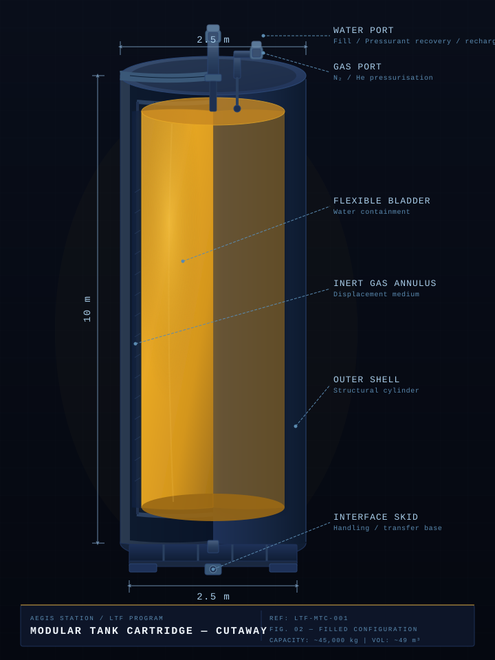

Aegis Station — Transportation & Logistics
Pre-station infrastructure that decouples propellant availability from Earth launch timing. Water in. Methalox out. Operational before the station ring is assembled.
The Aegis Station program is gated on ISRU. That has always been the foundational assumption: no lunar water production, no program. Everything cislunar — the station, the Lunar Tanker Fleet, the Long-Hauler's economics — flows from surface water being available at the right cadence and quality. The depot does not change that. It sits downstream of ISRU in the water supply chain, and its commissioning date is gated by ISRU and LT readiness, not by depot hardware delivery.
What the depot does do is come first among cislunar infrastructure nodes. Of everything that lives in lunar orbit, the depot is the earliest useful thing to build. It is the first consumer of ISRU water, the first demand signal that justifies scaling surface production, and the first operational target that gives ISRU a near-term reason to exist. Bringing the depot online is how the program pulls ISRU forward — not how it waits for ISRU.
Once operational, the depot breaks two standing constraints. The Hauler arrives, offloads LCH₄, refuels its return burn from depot-produced LOX, and departs. The Tanker fleet tops off between cycles rather than carrying full reserves on every ascent. The depot absorbs production variability from the surface and smooths it into a stable supply available on demand.
The depot's pressurized node also gives the program its first shirt-sleeve presence in lunar orbit — a maintenance-accessible, crew-visitable outpost — before the station ring is ever assembled. It is the beachhead.
The depot operates two parallel input streams that converge into a single methalox output. LOX is produced locally from water. Methane is imported. Both are stored cryogenically and dispensed on demand.
Water moves through the Aegis logistics chain in standardized cartridges — a fixed hardware unit that functions as both a transport vessel and a depot storage element. The cartridge is the atomic unit of the water supply chain: manufactured on Earth, delivered to the lunar surface, filled by ISRU operations, and flown to the depot by the Lunar Tanker Fleet.

Length: 10 m
Diameter: 2.5 m
Gross interior volume: ~49 m³
Full mass: 45 t
Dry mass: TBD
Interior inflatable/deflatable bladder contained within the outer structural cylinder. Bladder collapses fully when empty — cartridge ships to the surface as a lightweight structural shell and returns to orbit full. Single-use fill cycle per mission is the baseline; reuse cadence TBD pending durability analysis.
Sized to fit within Falcon Heavy and New Glenn payload envelopes for Earth launch. Hauler freight module accommodates multiple cartridges per transit. Standardized docking and fluid transfer interfaces common across depot, LT fleet, and surface infrastructure.
Dry mass not yet defined — drives launch manifest economics and LT payload fraction. Bladder material selection pending thermal, radiation, and reuse requirements. Cartridges-per-Hauler transit TBD pending Hauler freight module configuration. Total cartridge fleet size TBD pending ISRU cadence and depot storage requirements.
The inflatable bladder approach keeps empty cartridge mass low — the structural cylinder is essentially dead weight on the outbound trip to the surface. Minimizing dry mass is the dominant design driver: every kilogram of cartridge structure launched from Earth is a kilogram that isn't water.
The depot is a downstream consumer in the lunar water supply chain. It does not operate on Earth-sourced water — ever. The first drop of water to reach depot electrolysis arrives from the lunar surface via Lunar Tanker, filled from ISRU production. There is no transitional Earth-water phase, no commissioning run of launched water, no primer load. The depot's operational clock starts when ISRU and LT are ready to feed it.
This puts depot commissioning behind an ISRU gate. Depot hardware can be delivered, assembled, and powered up on its own schedule — but it will stand dormant until surface water production is online. Rather than a liability, this is the point. The depot exists in part to pull ISRU forward: it provides a clear, near-term demand signal and a concrete operational target for first surface water. The faster ISRU comes up, the faster the depot comes to first light.
The entire Aegis Station program has always been gated on ISRU. The depot does not introduce this constraint — it inherits it, and accelerates resolution of it by giving first water an immediate orbital consumer.
Hauler delivers depot modules, empty cartridges, and initial LCH₄ to lunar orbit. Depot is assembled, powered, thermally conditioned, and commissioned in the dry — electrolysis plant cold, cryo tanks empty, dispensing interfaces proven against inert stand-ins. The depot stands ready and waits.
Surface ISRU produces its first cartridge of processed lunar water. This is the foundational program milestone — not a depot milestone, but the gate that unblocks everything downstream of it. Until this happens, nothing else in lunar orbit moves.
A minimal Lunar Tanker capability — a single vehicle, low cadence — lifts the first filled cartridges from the ISRU node to the depot. Full LT fleet deployment is not required for this step. Depot first-light is a low-throughput event; the fleet scales later for a different mission.
First cartridge offload into depot inventory. Electrolysis plant starts. First LOX produced from lunar water. End-to-end propellant chain validated: surface ice → ISRU water → cartridge → LT → depot → LOX → dispensed to vehicle. This is the cislunar economy's first light.
LT cadence and ISRU throughput climb in lockstep with depot electrolysis capacity. Depot begins smoothing production variability and dispensing steadily to Hauler return burns and LT top-offs. Propellant production cost is dominated by LT operations and electrolysis power — launch costs drop out of the water equation entirely because Earth never enters it.
Starship affects the depot through hardware delivery economics, not through water supply. Cheaper, higher-cadence Earth launch reduces the cost of shipping depot modules, empty cartridges, LCH₄ freight, and other Hauler manifest cargo to lunar orbit. It does not — and cannot — feed water into the depot, because the depot does not accept Earth water as a matter of architecture.
Where Starship does matter is in compressing the hardware-delivery and dormant-standing phase. A program that can ship the depot cheaply and quickly buys margin to stand up ISRU without the depot becoming a schedule bottleneck in the other direction. The program should track Starship economics as a hardware-logistics variable, not as an input to the water supply chain.
Active cryo cooling to suppress boiloff in both LOX and LCH₄ tanks. Zero-boiloff (ZBO) target for long-duration storage windows between Hauler arrivals. Thermal isolation, multilayer insulation, and controlled venting provisions. Heat rejection to space via dedicated radiator panels.
Electrolysis, storage monitoring, and propellant transfer all operate without crew present. Fault detection, isolation, and recovery (FDIR) logic handles off-nominal states autonomously. Remote telemetry and commanding via ground or Aegis Station once operational. Safe-mode and pressurization safing on loss of comms.
Pressurized node supporting maintenance visits of several days. Life support, crew berthing, and basic EVA prep provisions. Not a long-duration habitat — crew presence is for servicing, inspection, and system resets, not extended operations.
Multiple docking ports sized for Hauler and LT approach geometries. Pressurized crew transfer compatible with Hauler and Shuttle. Unpressurized cargo and propellant transfer via standardized cryo fluid couplings. Robotic berthing provisions for cargo handling without EVA.
Solar arrays sized to drive continuous electrolysis operations as the primary load. Battery storage for eclipse periods and surge demand. Electrolysis power draw is the dominant sizing driver — depot power budget is essentially an electrolysis power budget with margin.
Modular architecture with discrete functional nodes — electrolysis module, cryo storage modules, crew node, docking adapter ring. Each module launchable and assembled on-orbit or pre-integrated for single-launch delivery. Interface design supports future incorporation into Aegis Station without redesign.
The depot is a service node. Its design is downstream of the vehicles it serves.
Interface Control Documents (ICDs) between the LOPD and each vehicle are a program-level deliverable. The depot's physical and operational interfaces must be locked before any vehicle finalizes its docking or propellant transfer system design.
The depot's relationship to Aegis Station is intentionally left open. Two futures are both valid, and the architecture is designed not to force a choice prematurely.
Depot modules incorporate into the Aegis Station architecture as the station assembles around them. The cryo storage, electrolysis plant, and docking infrastructure become station subsystems. The depot becomes the propellant and logistics hub of the completed station.
Depot remains an independent node in lunar orbit alongside Aegis Station. Provides redundancy, overflow capacity, and a separate operational asset. Useful if depot orbit and station orbit differ, or if program growth warrants two nodes.
The modular interface design ensures both options remain available without redesign. Program-level architecture authority holds the decision until the tradeoffs are sufficiently resolved.